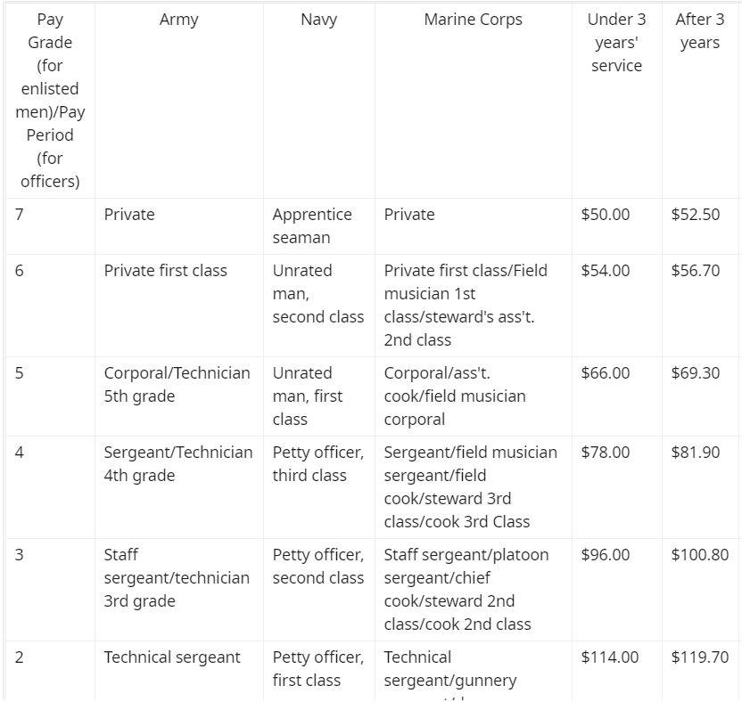
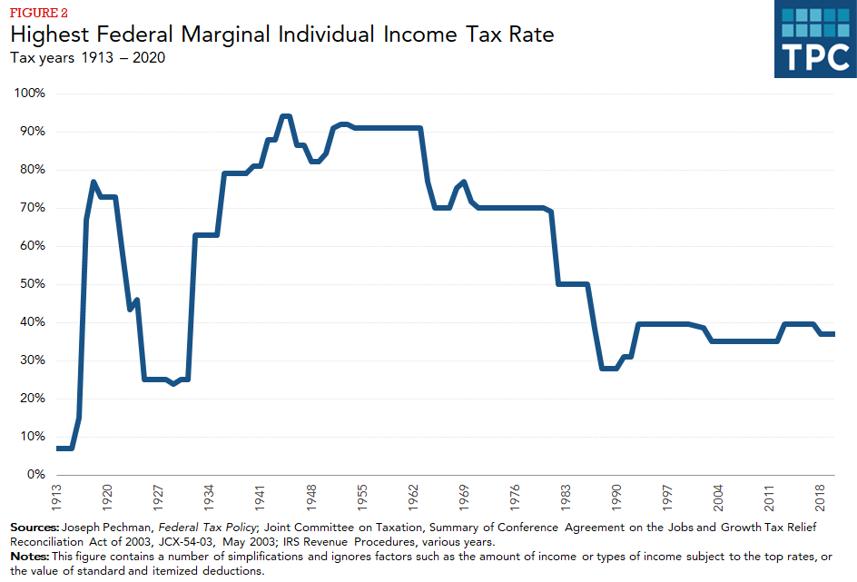
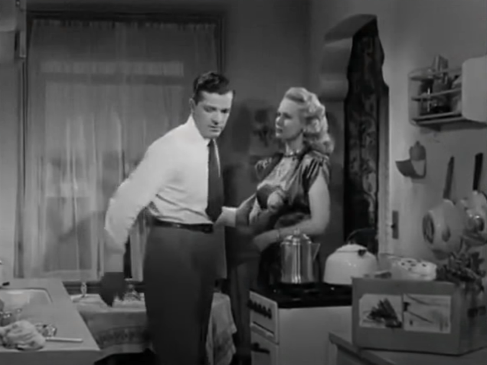
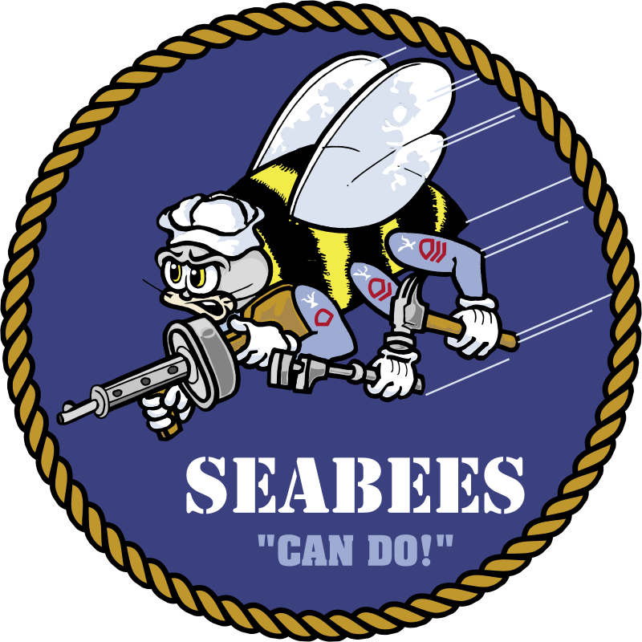
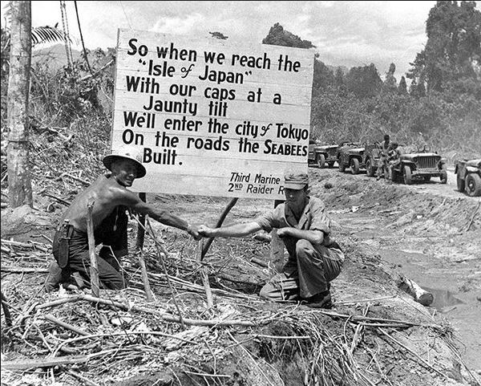
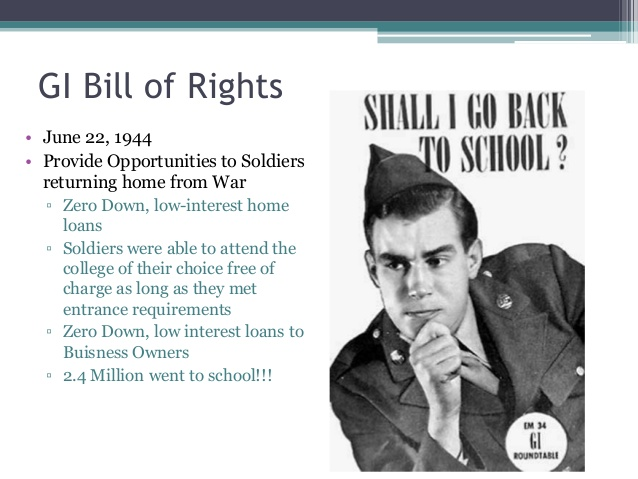
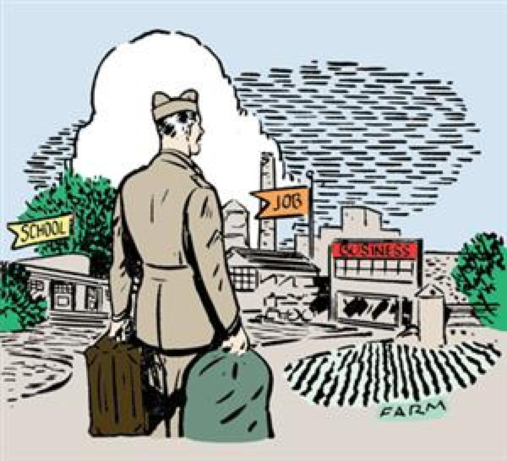
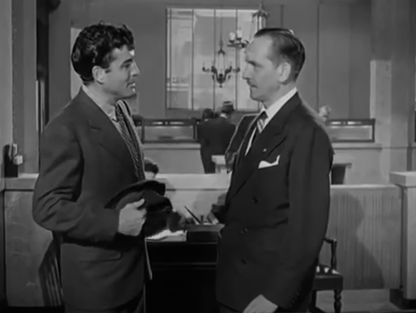
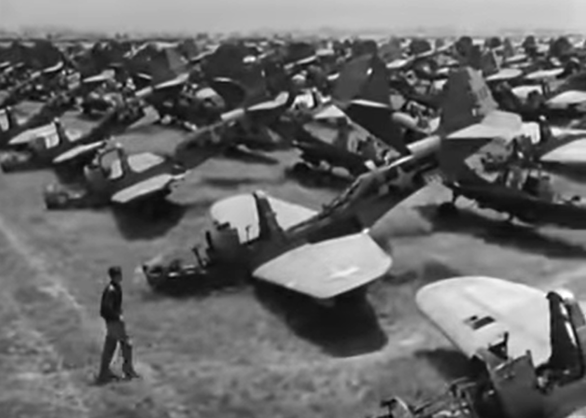
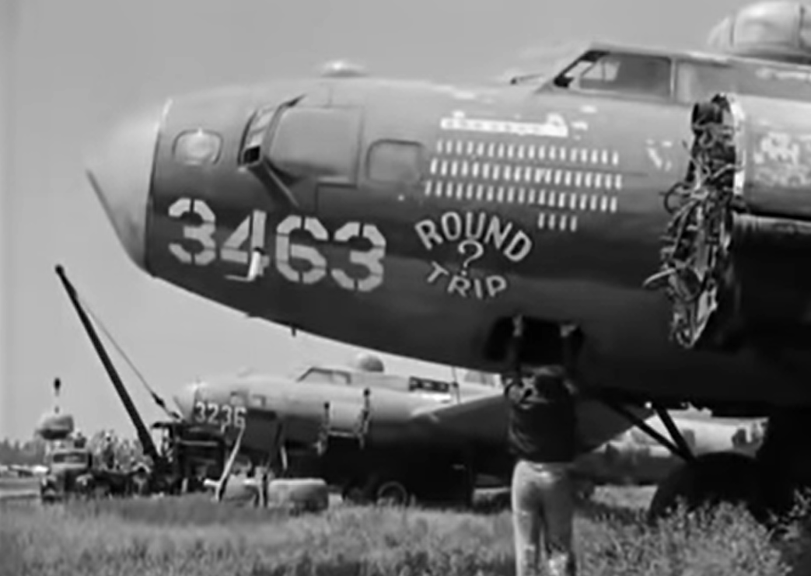

B-17 폭격수가 주인공인 영화 : 우리 생애 최고의 해 (하)
게시: 2020-10-08T06:30:16+09:00
먼저, 제2차 세계대전 당시 미군은 육군이나 해군이나 사병들은 동일한 급여를 받았습니다. 다만 맡은 보직과 병종, 부양 가족 유무에 따라서 각종 수당에서 큰 차이가 났습니다.

(1942년 당시 미군 사병 급여 표입니다.)
그러니까 군에 보병으로 입대하면 나오는 기본이 50불이었습니다. 그런데 HBO의 유명 미니시리즈인 'Band of Brothers'의 첫부분에 나오는, 이제 노인이 된 실제 공수부대원들과의 인터뷰 장면에 이런 부분이 나옵니다. '왜 공수부대에 지원했는가'를 묻는 질문에 대한 답변이 '그때 모병 부사관이 공수부대원이 되면 50불을 더 받는다고 그러더라고요' 라는 것이었습니다. 그러니까 공수부대처럼 위험한 병종의 이등병은 무려 2배의 월급을 받는 것이었지요. 비록 낙하산은 타지 않지만 공수부대 못지 않게 꽤 위험해 보이는 부대인 글라이더(glider) 공수부대는 불공평하게도 위험수당을 1달에 25불만 더 받았습니다. 그러나 몇 번 작전을 해보고는 글라이더 부대도 사상률이 엄청난 것을 보고 결국 그들도 1달에 50불의 위험수당을 받았다고 합니다.
그러나 (위에는 보이지 않습니다만) 저 표에 따르면 육군 대위의 월급은 프레드가 주장하는 400불이 아니라 200불에 불과합니다. 프레드가 거짓말을 한 것일까요 ? 물론 아닙니다. 비행 임무를 수행하는 인원은 장교나 사병이나 기본급의 50%를 추가로 받았습니다. 그리고 무공훈장을 받는 경우 훈장 하나당 5불씩을 더 받았고요. 그러니 이런저런 수당까지 다 합하면 정말 한달에 400달러 정도도 받았을 거에요.
육군 보병부대의 중사였던 알은 얼마나 받았을까요 ? 영화 속에서는 안 나옵니다만, 중사는 기본급이 114불이었습니다. 전투 부대에 있었고 가족도 있었으니 아마 150불 정도는 받았을 것 같습니다. 그런 월급을 받던 알이 이제 제대를 해서 얼마를 벌게 될까요 ? 자동으로 은행에 복직이 될까요 ? 이제 영화 속으로 다시 들어가 보시지요.
프레드가 민간 사회에서 직장을 구하는데 쓴 맛을 보고 있는 사이, 군에서는 중사였지만 은행에서 꽤 높은 자리에 있던 알도 전에 일하던 은행의 행장인 밀튼이 불러서 옛직장을 찾아갑니다. 확실히 프레드와는 많이 차이가 나네요.
밀튼 : 아닐세, 요즘 사업 여건이 썩 좋은 편은 아니야, 알. 경기 전망도 불투명하고, 파업에, 세금은 여전히 폭탄 수준일세. 그 시가 마음에 드나 ? 알 : 예, 밀튼씨, 괜찮네요. 밀튼 : 전쟁 중에는 그런 것을 구하기가 어려웠지. 하지만 이젠 쿠바 하바나에서 정기적으로 수입이 된다네. 시간이 지나면 다 저절로 정돈이 된다니까. 알, 자네가 다시 우리 은행에 와주었으면 하네. 알 : 친절에 감사드립니다, 밀튼씨, 하지만 제 옛 자리에 스티즈가 앉아있더군요. 그 친구 일자리를 빼앗고 싶지는 않습니다. 밀튼 : 스티즈는 그 자리에 그냥 있을 걸세. 자네가 승진하는 거야. 소액 대출 담당의 부사장 자리 어떤가? 연봉은 1만2천불일세. 말해보게. 알 : 어... 사실이라고 하기엔 너무 좋군요. 밀튼 : 일자리는 활짝 열려있네, 알. 그 자리의 적임자는 자네라네. 알 : 왜 제가 적임자라고 생각하십니까, 밀튼씨 ? 밀튼 : 자네의 군 경력이 우리에겐 무척 소중하다네. 보게나, 우리에겐 새로운 문제가 있어. 가령 이 제대군인법(GI Bill of Rights)이 한 예지. 제대군인들에게 온갖 대출을 해줘야 하거든. 우리에겐 군인들이 가진 문제와 함께 은행 업무를 제대로 이해하고 있는 사람이 필요한 걸세. 다른 말로 하자면 자네가 필요한 거지. 자, 어떤가, 알? 알 : 이거 참, 과분한 자리군요.
여기서 은행장 밀튼은 '세금이 여전히 폭탄 수준' (taxes still ruinous)라고 표현하지요. 대체 얼마나 세율이 높았길래 그랬을까요 ? 소득세 최고 세율은 95%에 달했습니다 ! 물론 이건 상징적인 것이었고 이런 세율을 적용받는 사람은 매우 적었습니다. 흔히들 1930년대의 대공황이 끝난 것은 제2차 세계대전 덕분이라고 하지만 아닙니다. 그게 사실이라면 지금도 사막 한가운데에 가짜 전쟁을 벌여서 대포와 미사일 등을 신나게 쏟아부으면 모든 경제 문제가 해결될텐데 그러지 않쟎아요. 세상에 공짜 점심은 없고 전쟁 비용을 누군가는 내야 했습니다. 누구겠어요? 결국 돈을 많이 가진 부자들이 내야지요. 덕분에 지난 편에 간단히 언급한 대로 미국은 대압착 시대를 맞이하여 중산층이 두터워지는 결과를 보게 됩니다. 이 최고 세율은 1960년대 초반까지도 90%였고 1980년대까지도 계속 80%였습니다. 레이건이 당선되어 부자들의 최고 세율을 대폭 깎아주면서 미국은 빈부격차가 다시 심해집니다.

(진짜 이 정도는 되어야 세금 폭탄이라고 할 수 있습니다. 십수억 하는 아파트에 세금 몇 십만원 올랐다고 세금 폭탄 운운하는 것은 엄살이 너무 심한 거지요.)
한편, 프레드의 구직은 잘 안 돌아갑니다. 그리고 다시 만난 그의 아내 메어리와의 관계도 그다지 좋지 않습니다. 하긴 딱 1달 동안 군대 클럽에서 사귄 뒤에 결혼하고, 결혼하자마자 3년간 헤어졌다가 다시 만났으니 좋을 턱이 없지요. 프레드는 저축해둔 대위 봉급이 1천달러 있어서 그것으로 양복도 좋은 것을 사는 등 이제 과거와는 달리 신사로서 근사한 삶을 살려고 하지만 정작 취직은 그리 쉽지 않습니다. 결국 수입은 없는데 그렇게 허영심 가득한 소비 생활을 하면서 돈이 다 떨어지고 그로 인해 부부 싸움이 시작됩니다. 아래의 부부 싸움 장면에서 인상적이었던 것은 저 시대만 하더라도 와이프의 팔을 거칠게 낚아채는 정도의 폭력이 허용되는 분위기인가 하는 것과, 그래도 요리를 남편이 한다는 것이었습니다.

(프레드와 메어리가 좁은 부엌에서 말다툼을 합니다. 부부 이혼의 가장 큰 원인은 성격 차이, 두번째는 경제 문제라고 하지요. 외도는 이혼 원인 3위에 불과합니다. 이 부부는 셋 다 가졌으니 오래 가긴 글렀지요.)
(프레드가 뭔가 봉투를 들고 단촐한 집안으로 들어옵니다.) 프레드 : 안녕, 여보. 메어리 : 뭐 가져온 거에요? 프레드 : 우리 저녁꺼리. 옥수수 크림 수프, 감자 샐러드, 살라미, 간으로 만든 소시지(liverwurst)야. 메어리 : 우리 재키네 핫스팟 식당에 가요. 예약해놓았어요. 프레드 : 우리 그냥 집에서 먹어. 메어리 : 어디 아픈 거에요? 프레드 : 아니, 돈이 없는 거야. (Broke) 메어리 : 돈이 없다고요? 프레드 : 그래. 메어리 : 무슨 일이 생긴 거에요? 돈이 어디로 간 거지요? 프레드 : 다 썼쟎아, 여보. 그렇게 된 거라고. 내가 돈 거의 다 써간다고 이야기하지 않았어? 내가 괜찮은 일자리를 찾을 거라고 기대를 하고 있었는데, 못 구할 것 같으니, 이제 재키네 핫스팟이나 블루 데빌 같은 고급 식당들은 잊어버려. 메어리 : 당신은 왜 일자리를 못 구하는 거에요? 시도는 해본 거에요? 프레드 : 그럼. 구직 사무소니 USES니 온 동네를 다 다녔어. 그 사람들 이야기로는 내가 견습생으로 2년 정도를 보내야 한다는 거야. 아니면 직업 학교를 가든가. 메어리 : 2년이라고요? 당신이 유치원에 다니는 동안 난 뭘 하고 있으라고요 ? 프레드 : 내 학교 숙제를 도와주면 되겠네. (중략 : 프레드는 말하면서 계속 저녁 준비를 합니다. 요리라는 것이 남비에 물을 끓이면서 거기에 분말 수프를 떠넣고, 아마도 간 소시지로 보이는 통조림을 따네요. 메어리는 아직도 전쟁 공포에 시달리며 악몽을 꾸는 프레드의 잠버릇에 대해 불평하다가 말다툼을 합니다.) 메어리 : 하지만 나한테 약간 저축금이 있어요. 오늘 저녁은 내가 살게요. 프레드 : 그거 그냥 아껴두는게 좋을 거야. 언젠가는 요긴하게 쓸 데가 있겠지. 고맙긴 한데 우린 집에서 그냥 먹자고. 메어리 : 글쎄요, 난 배가 고파요. 나 혼자라도 갈 거에요. 프레드 : (거칠게 메어리의 팔을 낚아채며) 당신 못가. 내가 요리해주는 것을 먹으라고. 메어리 : 이거 놔요! 프레드 : 우리 결혼할 때, 주례사 못 들었어? "즐거울 때나 괴로울 때나" 기억나 ? 지금이 괴로울 때야. 메어리 : 즐거울 때는 언제 오는데요? 프레드 : 내가 정신을 차리면 오겠지. 내가 더 이상 장교도 아니고 신사도 아니라는 걸 깨달으면 말이야. 내가 수프를 만드는 동안 가서 앉아서 잡지를 읽든 라디오를 듣든 하라고. 맛있는 저녁 차려줄게. 내가 전쟁 전에 청량음료 판매대 뒤에서 하던 것처럼 말이야.
이 대화에서 보시듯이, 안정적인 생활이 되려면 번듯한 일자리도 중요하지만 부부의 가치관이 비슷하고 무엇보다 경제적으로 검소한 삶을 살아야 합니다. 하긴 그런 경제 관념 자체가 가치관의 중요한 부분이긴 하지요. 아무래도 이 부부는 오래 가기가 어려울 것 같지요 ?
이렇게 제대군인 프레드가 고통 받고 있는데 미국 정부에서는 아무런 도움을 주지 않고 있었을까요 ? 물론 그건 아닙니다. 저 위에서 알과 은행장이 나눈 대화에서도 잠깐 나왔던 GI Bill of Rights라는 것은 1944년 6월 통과된 'The Servicemen's Readjustment Act of 1944' 흔히 GI Bill 이라는 법안을 말합니다. 이 법안은 제2차 세계대전에 참전했던 병사들에게 줄 혜택을 정의한 것이었는데, 대학이나 직업 학교를 가고자 하는 사람에게는 교육비를, 사업이나 농장을 하고자 하는 사람에게는 저금리의 대출을 해주고 또 실업수당도 최대 1년까지 주는 것입니다. 이 법안은 전후 미국 경제 재건에 무척 긍정적인 역할을 했습니다. 이 제도에 의해 총 1800만에 달했던 군인들 중 220만명이 대학에 갔고, 560만이 이런저런 직업 훈련을 받았습니다. 제대군인들이 위에서 일자리를 구하는 프레드에게 직업 소개소에서 직업 학교를 자꾸 권했던 것도 이런 배경이 있었기 때문입니다. 프레드는 폭격수(bombardier)로 뽑힌 것을 보면 평균 이상의 수학적 재능이 있었던 것 같은데, 아마 프레드도 먹여살릴 와이프가 없었다면 아마 저런 훈련 프로그램에 참여해서 좀더 나은 직장을 구할 수도 있었을 것입니다. 이와는 별도로, 두 손을 잃은 호머의 경우 한달에 200불씩을 계속 지급받습니다. 호머도 그에 대해 꽤 만족합니다.

('GI Bill'에서 지원하는 교육비로 대학 교육을 받거나 직업 훈련을 받으라는 당시의 포스터입니다.)
한편, 이제 알은 부행장으로서 제대군인에게 소액 대출 심사를 합니다. 아래 대화에서 보시겠지만 GI Bill에 의한 제대군인 대출이 꼭 100% 국가 지원금으로 해주는 것은 아니었습니다. 은행원 : 저기 노박(Novak)씨가 기다리고 계세요. GI 대출을 원하십니다. 알 : 아, 알았어. 내가 만나보지. 노박씨? 앉으시지요. 노박 : 고맙습니다, 선생님 (sir). 알 : 저한테 장교한테나 쓰는 경어(sir)를 쓰실 필요는 없습니다, 노박씨. 저는 부사관(sergeant)이었거든요. 해군에 계셨군요. 노박 : 예, 선생님. 아 제 말은... 예. 그랬지요. 해군 공병대(Seabees)에 있었습니다.

(해군 공병대, 흔히 Seabees라고 불린 부대의 휘장입니다.)

(파푸아 뉴기니의 부갱빌에서의 Seabees, 즉 미해군 공병대의 모습입니다. 푯말에는 이렇게 씌여 있습니다. "그러니까 우리가 의기양양하게 모자를 삐딱하게 쓰고 일본에 도착하면, 우리는 Seabee들이 닦아놓은 도로를 통해 도쿄에 입성하게 될거야")
알 : 어디서 복무하셨지요? 노박 : 태평양 전역에서였어요. 이 섬에서 일하다가 저 섬에서 일하다가 했지요. 알 : 주로 무슨 일을 하셨나요? 노박 : 상륙 전에 들어가서 기뢰와 수중 장애물을 제거했습니다. 충분한 땅을 점령하면 거기에 활주로를 닦았지요. 알 : 꽤 재미있는 일이었겠군요? 노박 : 아니에요. 아주 지루한 일이었어요. 섬들이 다 똑같았거든요. 이오지마 때까지는요. 거기는 다르더라고요. 알 : 그랬다고 하더군요. 꽤 대가족이시네요. 부인과 4명의 자녀분이요. 노박 : 예. 제가 3년간 군대에 가있지 않았다면 더 많았을 거에요. 알 : 농장을 사고 싶으시다고요. 노박 : 예, 선생님. 괜찮은 물건을 하나 봤습니다. 알 : 담보물(collateral)은 어떤가요? 노박 : 담보물이요? 그게 뭔가요? 알 : 대출에 대한 보장이요. 재산으로 내세우실 만한 것이 뭐가 있나요? 주식이나 채권? 부동산? 어떤 귀중품 같은 것 가지신 것이 있을까요? 노박 : 아니요, 스티븐슨씨. 요점은 제가 아무런 재산이 없다는 것입니다. 그러니까 대출을 받으려는 것이고요. 그래야 재산을 가질 수 있으니까요. 알 : 그렇군요. 담보가 없군요. 그러면 일이 좀 어려워집니다. 노박 : 저는 솜씨 좋은 농부에요, 스티븐슨씨. 저는 전쟁 중에도 계속 농사일을 했습니다. 남는 시간에 그런 섬들에서 텃밭을 일궈서 토마토와 그린 콘 같은 것을 재배했지요. 전쟁 전부터 저는 소작일을 했습니다. 제 아버지처럼요. 이젠 제 자신의 땅을 조금 갖고 거기서 농사를 짓고 싶습니다. 알 : 뭘 키우는 걸 좋아하시는군요? 노박 : 그럼요, 선생님. 전세계적으로 식량이 부족한 마당에, 농사야말로 세상에서 가장 중요한 일입니다. 제 말은... 그렇게 생각하지 않으세요? 알 : 예. 노박 : 보세요, 스티븐슨씨. 저는 이게 은행에게 뭘 공짜로 나눠달라고 사정하는 것이 아니라고 생각합니다. 저는 이게 제 권리라고 생각해요. 최소한, 그게 제가 다른 제대군인들에게 들은 이야기에요. 정부가 우리에게 대출 보증을 서준다고 들었습니다. 알 : 노박씨의 대출은 이 은행을 통해서 처리됩니다만, 노박씨가 요청하시는 6천불의 절반은 이 은행의 부담입니다. 그러니 이 은행에게도 위험부담이 생깁니다.
 
(그러니까 노박씨는 이런 광고물을 보고 은행을 찾아온 것이지요.)

(결국 알은 노박의 성실함을 높이 사서 대출을 승인합니다. 그리고 그 때문에 나중에 은행장에게 불려가서 쓴 소리를 듣게 됩니다.)
 
(결국 프레드는 어떻게 될까요 ? 그는 전쟁이 끝났다고 저렇게 버려져 고철 신세가 된 전투기며 폭격기들의 신세가 되는 것일까요 ? 전쟁이 끝나면 총과 대포를 녹여 낫과 쟁기를 만든다더니, 그런 비슷한 일이 실제로 벌어집니다. 자세한 것은 영화를 보세요. 저는 모 통신사의 IP TV의 영화 보기 메뉴에서 이 영화를 봤습니다. 협찬 받은 거 아닙니다. 이 영화는 하도 오래 되어 공짜로 볼 수 있습니다.)
나머지 줄거리는 아무래도 영화를 보시는 것이 좋겠습니다. 특히 결국 주급 32.5달러짜리 청량음료 판매대로 돌아갔다가 나중에 그 일자리마저 잃고 별로 사랑하지도 않던 와이프와도 갈라선 프레드의 운명은 어떻게 될지, 과연 페기와의 애틋한 사랑은 이루어질지 궁금하시면요.
(확실한 건 이 포스터에서 프레드 품에 안긴 건 아내 메어리가 아니라 페기라는 것입니다.)
Source : www.scripts.com/script.php?id=the_best_years_of_our_lives_3947&p=19
en.wikipedia.org/wiki/G.I._Bill
www.reddit.com/r/AskHistorians/comments/4j8zos/pay_of_american_gis_during_world_war_ii/
www.taxpolicycenter.org/briefing-book/how-do-federal-income-tax-rates-work